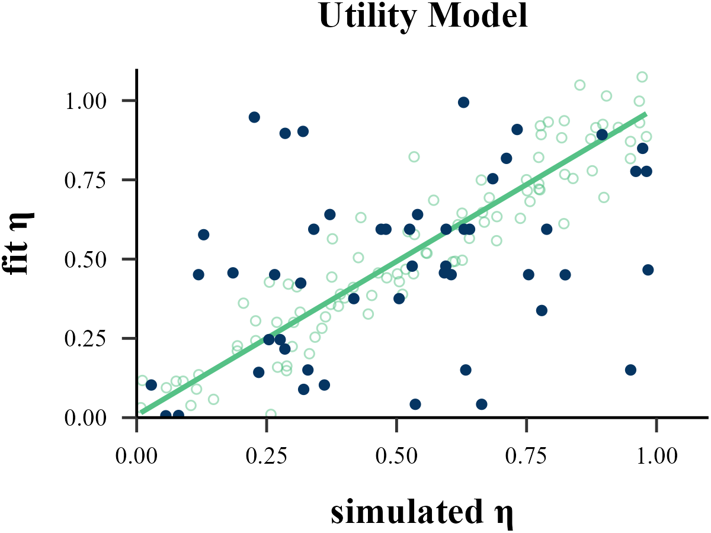
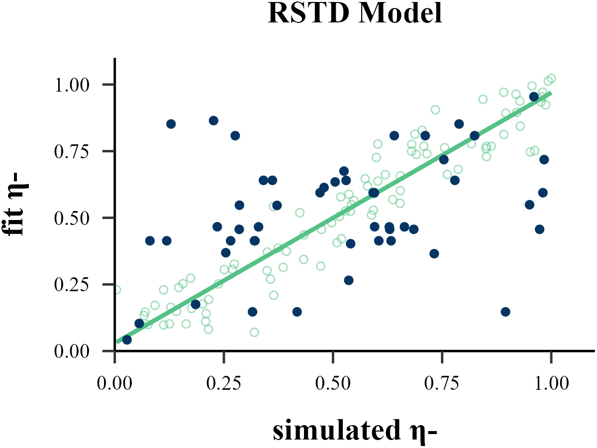
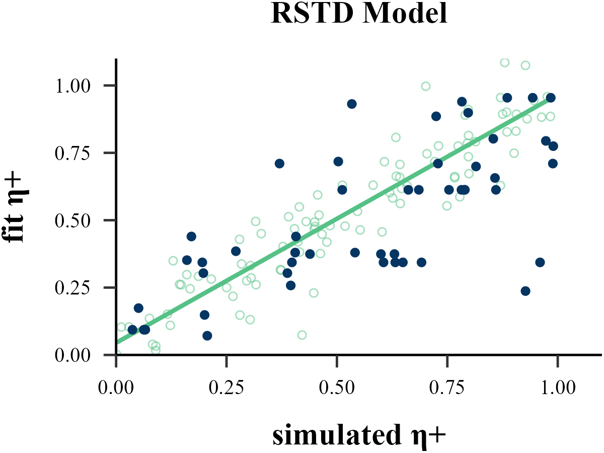
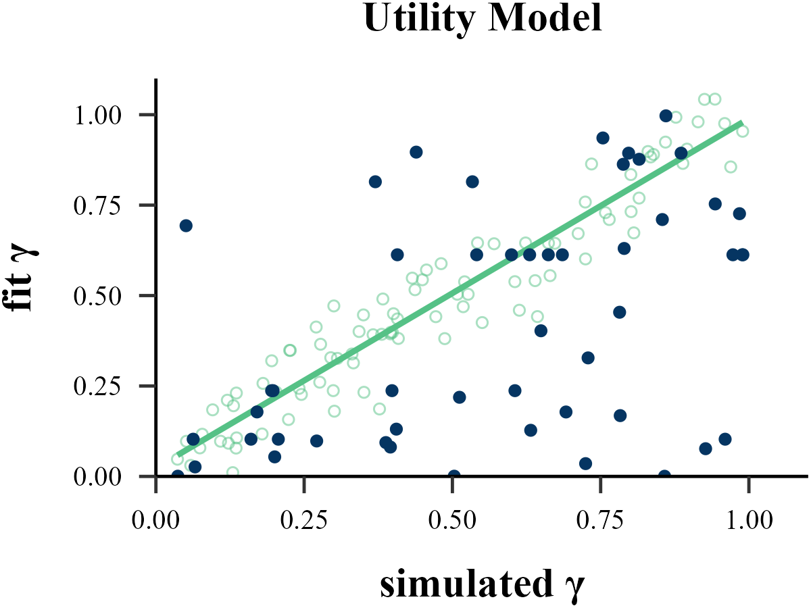
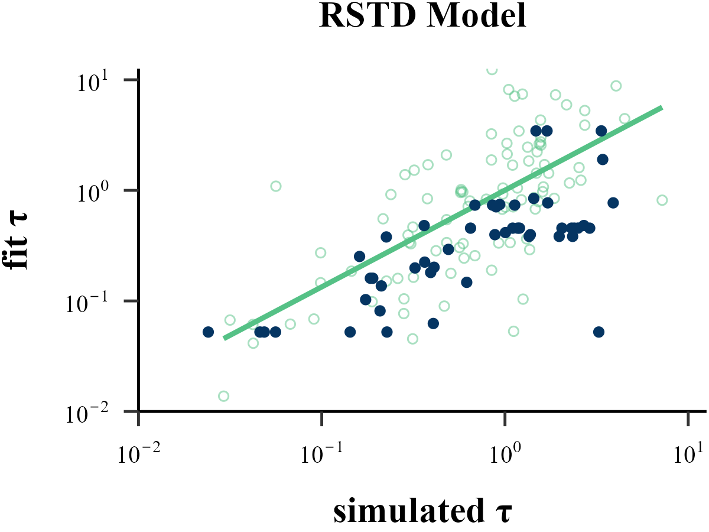
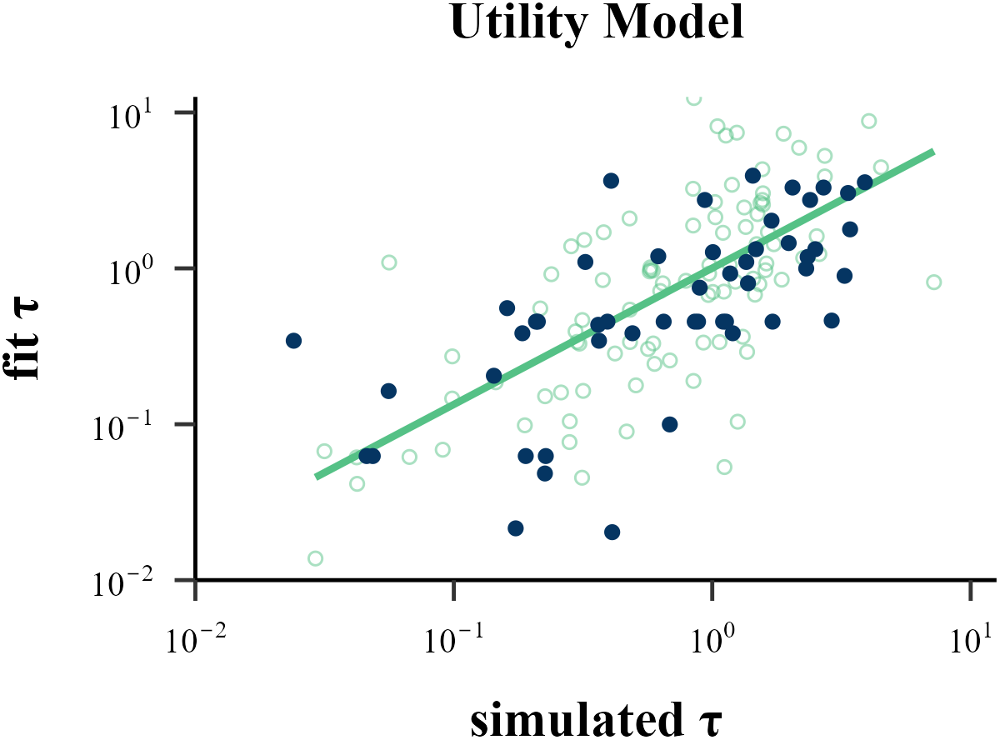

recovery <- binaryRL::rcv_d(
data = binaryRL::Mason_2024_Exp2,
id = 1,
n_trials = 360,
model_names = c("TD", "RSTD", "Utility"),
simulate_models = list(binaryRL::TD, binaryRL::RSTD, binaryRL::Utility),
simulate_lower = list(c(0, 0), c(0, 0, 0), c(0, 0, 0)),
simulate_upper = list(c(1, 1), c(1, 1, 1), c(1, 1, 1)),
fit_models = list(binaryRL::TD, binaryRL::RSTD, binaryRL::Utility),
fit_lower = list(c(0, 0), c(0, 0, 0), c(0, 0, 0)),
fit_upper = list(c(1, 5), c(1, 1, 5), c(1, 1, 5)),
initial_params = NA,
initial_size = 50,
seed = 123,
iteration_s = 50,
iteration_f = 50,
nc = 16,
#algorithm = "L-BFGS-B" # Gradient-Based (stats::optim)
#algorithm = "GenSA" # Simulated Annealing (GenSA)
#algorithm = "GA" # Genetic Algorithm (GA)
algorithm = "DEoptim" # Differential Evolution (DEoptim)
#algorithm = "PSO" # Particle Swarm Optimization (pso)
#algorithm = "Bayesian" # Bayesian Optimization (mlrMBO)
#algorithm = "CMA-ES" # Covariance Matrix Adapting (cmaes)
#algorithm = "NLOPT_GN_MLSL"# Nonlinear Optimization (nloptr)
)
result <- dplyr::bind_rows(recovery) %>%
dplyr::select(simulate_model, fit_model, iteration, everything())
write.csv(result, file = "../OUTPUT/result_recovery.csv", row.names = FALSE)Process
list_simulated <- binaryRL::simulate_list(
data = binaryRL::Mason_2024_Exp2,
id = 1,
obj_func = binaryRL::RSTD,
n_params = 3,
n_trials = 360,
lower = c(0, 0, 1),
upper = c(1, 1, 10),
seed = 123,
iteration = 10
)
df_recovery <- binaryRL::recovery_data(
list = list_simulated,
id = 1,
fit_model = binaryRL::RSTD,
model_name = "RSTD",
n_params = 3,
n_trials = 360,
lower = c(0, 0, 1),
upper = c(1, 1, 2),
iteration = 50,
algorithm = "DEoptim"
)Parameter Recovery
Plot Function
plot_param_rcv <- function(
data = read.csv("../OUTPUT/result_recovery.csv"),
model,
param_index,
param_name,
rate,
filename
){
data <- data %>%
dplyr::filter(simulate_model == fit_model & simulate_model == model) %>%
dplyr::mutate(
input_param = .data[[paste0("input_param_", param_index)]],
output_param = .data[[paste0("output_param_", param_index)]]
)
if (param_name == "τ") {
if (min(data$input_param) > 1) {
data <- data %>%
dplyr::mutate(
input_param = log10(input_param - 1),
output_param = log10(output_param - 1)
)
param_name <- "τ-1"
}
else if ((min(data$input_param) <= 1)) {
data <- data %>%
dplyr::mutate(
input_param = log10(input_param),
output_param = log10(output_param)
)
}
set.seed(123)
x <- rexp(100, rate = rate)
norm <- data.frame(
x = log10(x),
y = log10(x) + sample(c(-1, 1), 100, replace = TRUE) * log10(rexp(100, rate = rate))
)
x_min <- floor(quantile(norm$x, 0.05, na.rm = TRUE))
x_max <- ceiling(quantile(norm$x, 0.95, na.rm = TRUE))
y_min <- floor(quantile(norm$y, 0.05, na.rm = TRUE))
y_max <- ceiling(quantile(norm$y, 0.95, na.rm = TRUE))
} else {
x <- runif(100, 0, 1)
norm <- data.frame(
x = x,
y = x + rnorm(100, 0, 0.1)
)
x_min <- trunc(min(norm$x))
if (max(norm$x) < 1) {
x_max <- 1
}
else {
x_max <- trunc(max(norm$x))
}
y_min <- trunc(min(norm$y))
if (max(norm$y) < 1) {
y_max <- 1
}
else {
y_max <- trunc(max(norm$y))
}
}
plot <- ggplot2::ggplot(data, aes(x = input_param, y = output_param)) +
ggplot2::geom_smooth(
data = norm,
mapping = aes(x = x, y = y),
method = "lm", color = "#55c186", se = FALSE
) +
ggplot2::geom_point(
data = norm,
mapping = aes(x = x, y = y),
color = "#55c186",
alpha = 0.5, shape = 1
) +
ggplot2::geom_point(color = "#053562") + # 绘制散点
ggplot2::scale_y_continuous(
limits = c(y_min, y_max + 0.1), expand = c(0, 0),
labels =
if (grepl("τ", param_name)) {
function(x) parse(text = paste0("10^", x))
}
else {
waiver()
}
) +
ggplot2::scale_x_continuous(
limits = c(x_min, x_max + 0.1), expand = c(0, 0),
labels =
if (grepl("τ", param_name)) {
function(x) parse(text = paste0("10^", x))
}
else {
waiver()
}
) +
ggplot2::labs(
x = paste("simulated", param_name),
y = paste("fit", param_name),
title = paste(model, "Model")
) +
papaja::theme_apa() +
ggplot2::theme(
text = element_text(
family = "serif",
face = "bold",
size = 15
),
axis.text = element_text(
color = "black",
family = "serif",
face = "plain",
size = 10
),
plot.title = element_text(
family = "serif", face = "bold",
size = 15, hjust = 0.5
),
plot.margin = margin(t = 1, r = 1, b = 1, l = 1),
)
ggplot2::ggsave(
plot = plot,
filename = filename,
width = 4, height = 3
)
return(plot)
}eta
plot_param_rcv(
data = read.csv("../OUTPUT/result_recovery.csv"),
model = "TD",
param_index = 1,
param_name = "η",
filename = "../FIGURE/1_TD_eta.png"
)
plot_param_rcv(
data = read.csv("../OUTPUT/result_recovery.csv"),
model = "RSTD",
param_index = 1,
param_name = "η-",
filename = "../FIGURE/2_RSTD_eta1.png"
)
plot_param_rcv(
data = read.csv("../OUTPUT/result_recovery.csv"),
model = "RSTD",
param_index = 2,
param_name = "η+",
filename = "../FIGURE/2_RSTD_eta2.png"
)
plot_param_rcv(
data = read.csv("../OUTPUT/result_recovery.csv"),
model = "Utility",
param_index = 1,
param_name = "η",
filename = "../FIGURE/3_Utility_eta.png"
)




data <- read.csv("../OUTPUT/result_recovery.csv") %>%
dplyr::filter(simulate_model == fit_model & simulate_model == "TD")
cor(data$input_param_1, data$output_param_1)## [1] 0.7781049
data <- read.csv("../OUTPUT/result_recovery.csv") %>%
dplyr::filter(simulate_model == fit_model & simulate_model == "RSTD")
cor(data$input_param_1, data$output_param_1)## [1] 0.3452274
data <- read.csv("../OUTPUT/result_recovery.csv") %>%
dplyr::filter(simulate_model == fit_model & simulate_model == "RSTD")
cor(data$input_param_2, data$output_param_2)## [1] 0.7105194
data <- read.csv("../OUTPUT/result_recovery.csv") %>%
dplyr::filter(simulate_model == fit_model & simulate_model == "Utility")
cor(data$input_param_1, data$output_param_1)## [1] 0.3687781gamma
plot_param_rcv(
data = read.csv("../OUTPUT/result_recovery.csv"),
model = "Utility",
param_index = 2,
param_name = "γ",
filename = "../FIGURE/3_Utility_gamma.png"
)

data <- read.csv("../OUTPUT/result_recovery.csv") %>%
dplyr::filter(simulate_model == fit_model & simulate_model == "Utility")
cor(data$input_param_2, data$output_param_2)## [1] 0.4493738tau
plot_param_rcv(
data = read.csv("../OUTPUT/result_recovery.csv"),
model = "TD",
param_index = 2,
param_name = "τ",
rate = 1,
filename = "../FIGURE/1_TD_tau.png"
)
plot_param_rcv(
data = read.csv("../OUTPUT/result_recovery.csv"),
model = "RSTD",
param_index = 3,
param_name = "τ",
rate = 1,
filename = "../FIGURE/2_RSTD_tau.png"
)
plot_param_rcv(
data = read.csv("../OUTPUT/result_recovery.csv"),
model = "Utility",
param_index = 3,
param_name = "τ",
rate = 1,
filename = "../FIGURE/3_Utility_tau.png"
)



data <- read.csv("../OUTPUT/result_recovery.csv") %>%
dplyr::filter(simulate_model == fit_model & simulate_model == "TD")
cor(data$input_param_2, data$output_param_2)## [1] 0.6217247
data <- read.csv("../OUTPUT/result_recovery.csv") %>%
dplyr::filter(simulate_model == fit_model & simulate_model == "RSTD")
cor(data$input_param_3, data$output_param_3)## [1] 0.4375912
data <- read.csv("../OUTPUT/result_recovery.csv") %>%
dplyr::filter(simulate_model == fit_model & simulate_model == "Utility")
cor(data$input_param_3, data$output_param_3)## [1] 0.5882689Model Recovery
Plot Function
plot_model_rcv <- function(
data = read.csv("../OUTPUT/result_recovery.csv"),
matrix_type,
filename
){
data <- data %>%
dplyr::select(simulate_model, fit_model, iteration, BIC) %>%
tidyr::pivot_wider(names_from = "fit_model", values_from = "BIC") %>%
dplyr::mutate(
TD_score = ifelse(TD == pmin(TD, RSTD, Utility), 1, 0),
RSTD_score = ifelse(RSTD == pmin(TD, RSTD, Utility), 1, 0),
Utility_score = ifelse(Utility == pmin(TD, RSTD, Utility), 1, 0)
) %>%
dplyr::select(simulate_model, TD_score, RSTD_score, Utility_score) %>%
dplyr::group_by(simulate_model) %>%
dplyr::summarise(
TD = round(mean(TD_score), 2),
RSTD = round(mean(RSTD_score), 2),
Utility = round(mean(Utility_score), 2),
) %>%
dplyr::ungroup() %>%
dplyr::arrange(factor(simulate_model, levels = c("TD", "RSTD", "Utility"))) %>%
tidyr::pivot_longer(
cols = -simulate_model,
names_to = "fit_model",
values_to = "value"
) %>%
dplyr::mutate(
simulate = factor(simulate_model, levels = c("TD", "RSTD", "Utility")),
fit = factor(fit_model, levels = c("TD", "RSTD", "Utility")),
)
switch(
matrix_type,
"confusion" = {
data <- data
title <- "Confusion Matrix: P(fit model | simulated model)"
hjust <- 1.3
},
"inversion" = {
data <- data %>%
dplyr::group_by(fit_model) %>%
dplyr::mutate(value = round(value / sum(value), 2)) %>%
dplyr::ungroup()
title <- "Inversion Matrix: P(simulated model | fit model)"
hjust <- 1.5
}
)
plot <- ggplot2::ggplot(data, aes(x = simulate, y = fit, fill = value)) +
ggplot2::geom_tile() +
ggplot2::scale_fill_gradient2(
low = "#003161", mid = "#55c186", high = "#f0de36",
limits = c(0, 1),
midpoint = 0.4
) +
ggplot2::labs(
title = title,
x = "simulate model",
y = "fit model"
) +
ggplot2::geom_text(aes(label = value), size = 10, color = "white") +
ggplot2::theme_minimal() +
ggplot2::theme(
legend.position = "none",
panel.background = ggplot2::element_rect(fill = "white", color = NA),
plot.background = ggplot2::element_rect(fill = "white", color = NA),
plot.margin = margin(t = 10, r = 10, b = 10, l = 10),
plot.title = element_text(
family = "serif", face = "bold",
size = 25, hjust = hjust, margin = margin(b = 20)
),
axis.title.y = element_text(
family = "serif", face = "bold",
size = 25, margin = margin(r = 20)
),
axis.title.x = element_text(
family = "serif", face = "bold",
size = 25, margin = margin(t = 20)
),
axis.text = element_text(
color = "black", family = "serif", face = "bold",
size = 20
)
)
ggplot2::ggsave(
plot = plot,
filename = filename,
width = 8, height = 6
)
return(plot)
}
plot_model_rcv(
data = read.csv("../OUTPUT/result_recovery.csv"),
matrix_type = "confusion",
filename = "../FIGURE/matrix_confusion.png"
)
plot_model_rcv(
data = read.csv("../OUTPUT/result_recovery.csv"),
matrix_type = "inversion",
filename = "../FIGURE/matrix_inversion.png"
)